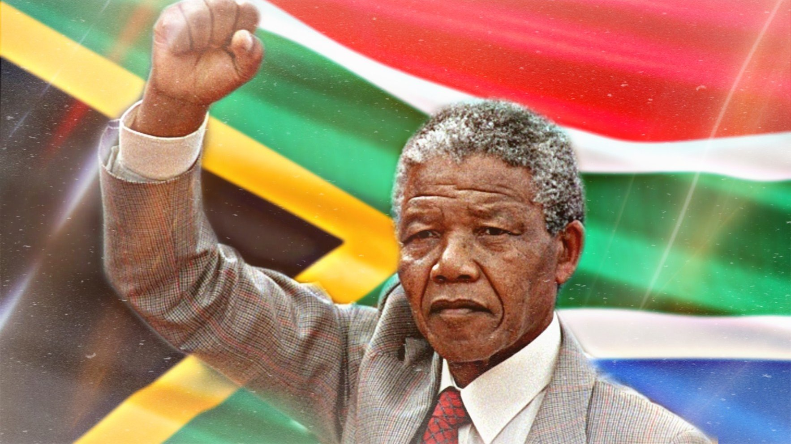

de geschiedenis en geografie van zuid afrika
zuid afrika is een land dat helemaal in het zuiden ligt van afrika en veel buurtlanden heeft. Naast Zuid-Afrika grenzen Namibië, Botswana, Zimbabwe, Mozambique en Swaziland aan het noorden. Lesotho ligt in het oosten en wordt helemaal omringd door Zuid-Afrika. De Atlantische Oceaan ligt ten westen en de Indische Oceaan ten oosten van Zuid-Afrika. Voor de kust liggen verschillende eilanden. Het meest bekende is Robbeneiland in Kaapstad, waar Nelson Mandela, jarenlang werd gevangen gehouden. Prince Edward Island, Marion Island en Santa Cruz zijn ook eilanden.
De geschiedenis van Zuid-Afrika is best ingewikkeld, maar ik zal proberen het eenvoudig uit te leggen. Heel, heel lang geleden woonden er verschillende volkeren in Zuid-Afrika, zoals de Khoisan-mensen. In de 17e eeuw kwamen Europese kolonisten, vooral Nederlanders, naar Zuid-Afrika. Ze vestigden zich daar en begonnen handel te drijven. In de 19e eeuw kwamen er ook Britten naar Zuid-Afrika, en dit leidde tot conflicten tussen de Nederlandse en Britse kolonisten. Deze conflicten werden bekend als de Boerenoorlogen. In de 20e eeuw was er apartheid in Zuid-Afrika. Dat betekent dat mensen van verschillende rassen gescheiden werden gehouden, met minder rechten voor zwarte Zuid-Afrikanen. Dit zorgde voor veel problemen en onrechtvaardigheid. In de jaren 1990 kwam er gelukkig een einde aan de apartheid. Nelson Mandela, een belangrijke anti-apartheidsstrijder, werd de eerste zwarte president van Zuid-Afrika. Sindsdien werkt het land aan het samenbrengen van de verschillende bevolkingsgroepen en het oplossen van problemen die zijn ontstaan tijdens de apartheid. Zuid-Afrika is nu een land met een diverse bevolking en probeert eenheid en gelijkheid te bevorderen na een moeilijke geschiedenis.
Hier zie je een afbeelding van de bekende nelson mandela. Nelson Mandela, Zuid-Afrikaanse leider, streed tegen apartheid (rassenscheiding). Na 27 jaar gevangenschap werd hij in 1990 vrijgelaten. In 1994 werd hij Zuid-Afrika's eerste zwarte president, bevorderde gelijkheid en eenheid. Mandela overleed op 5 december 2013, maar zijn erfenis van strijd voor rechtvaardigheid en vrede leeft voort.